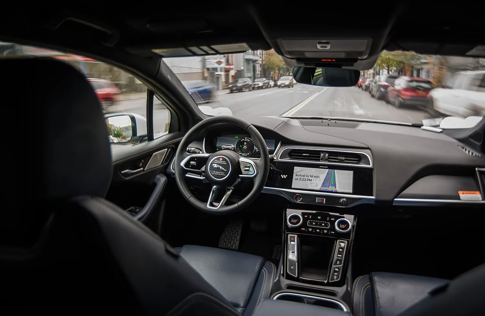

▲ 토레스 EVX는 강남 자율주행택시 19대 중 8대를 차지한다 ⓒ Wikimedia Commons
강남에서 밤늦게 택시가 안 잡힌 경험, 한 번쯤 있으실 겁니다.
그 시간대에만 운행하는 택시가 있습니다.
자율주행택시입니다. 대수가 19대로 늘면서 잡힐 확률도 조금 올라갔습니다. 다만 아무 때나, 아무 데나 갈 수 있는 것은 아닙니다.
1. 어떻게 부르나
| 단계 | 내용 |
|---|---|
| 1 | 카카오T 앱 실행 |
| 2 | 호출 목록에서 '서울자율차' 선택 |
| 3 | 출발지·목적지 입력 — 둘 다 운행지구 안이어야 함 |
📍 목록에 안 뜬다면
세 가지를 확인하세요. ①평일인지 ②밤 10시~새벽 5시 사이인지 ③현재 위치가 강남 시범운행지구 안인지입니다. 하나라도 어긋나면 선택지 자체가 나타나지 않습니다.
2. 언제, 어디서
| 항목 | 내용 |
|---|---|
| 요일 | 평일만 — 주말·공휴일 제외 |
| 시간 | 밤 10시 ~ 익일 새벽 5시 |
| 구역 | 강남 자율주행자동차 시범운행지구 약 20.4㎢ |
시간대 설정에는 이유가 있습니다. 심야는 통행량이 적어 돌발 상황이 상대적으로 덜 발생합니다. 동시에 택시 부족이 가장 심한 시간이기도 합니다. 기술 검증과 실제 수요가 겹치는 구간을 고른 셈입니다.

▲ 기아 EV6는 19대 중 6대가 투입됐다 ⓒ Wikimedia Commons
3. 요금 — 시간대별로 다릅니다
| 시간대 | 요금 |
|---|---|
| 새벽 4시 ~ 5시 | 4,800원 (가장 저렴) |
| 밤 10시 ~ 11시 / 새벽 2시 ~ 4시 | 5,800원 |
| 밤 11시 ~ 새벽 2시 | 6,700원 (최고 할증) |
✅ 요금 관련 참고
· 무료 시범 서비스가 아닙니다 — 정상적으로 요금이 부과됩니다
· 가장 부르기 어려운 밤 11시~새벽 2시가 가장 비쌉니다
· 새벽 4~5시가 가장 저렴합니다
· 결제는 카카오T에 등록된 수단으로 처리됩니다
4. 타면 무엇이 다를까
가장 먼저 알아둬야 할 것이 있습니다. 운전석에 사람이 앉아 있습니다.
📍 시험운전자가 동승합니다
현재 강남에서 운행 중인 차량에는 시험운전자 1명이 상시 탑승합니다. 일부 구간은 수동 운전으로 통과합니다. 즉 사람이 언제든 개입할 수 있는 상태를 전제로 한 운행입니다.
| 기대 | 실제 |
|---|---|
| 운전석이 비어 있다 | 시험운전자 탑승 |
| 전 구간 자율주행 | 일부 구간 수동 |
| 어디든 갈 수 있다 | 20.4㎢ 안에서만 |
| 바로 배차된다 | 19대 운행 — 대기 가능성 |
19대라는 숫자를 감안해야 합니다. 20.4㎢ 구역에 19대면 밀도가 높지 않습니다. 일반 택시가 안 잡힐 때의 선택지 하나로 보는 편이 현실적입니다.

▲ 완전 무인 운행은 국내에서 11월 상암에서 시작될 예정이다 ⓒ Wikimedia Commons
5. 11월부터 달라지는 것
오는 11월, 상암 지역에서 레벨4 완전 무인 자율주행택시 운행이 예정돼 있습니다. 시험운전자가 타지 않는 방식입니다.
| 구분 | 강남 (현재) | 상암 (11월 예정) |
|---|---|---|
| 시험운전자 | 상시 동승 | 미탑승 |
| 수동 개입 | 일부 구간 있음 | 원격 관제 전제 |
강남 서비스 확대의 배경과 기술 단계에 대한 자세한 내용은 강남 자율주행택시 19대 확대 기사에서 다뤘습니다.

▲ 투입 차량은 모두 전기차다 ⓒ Wikimedia Commons
6. 정리
강남 자율주행택시는 카카오T에서 '서울자율차'를 선택해 부릅니다. 평일 밤 10시부터 새벽 5시까지, 강남 시범운행지구 약 20.4㎢ 안에서만 이용할 수 있습니다.
요금은 시간대에 따라 4,800원에서 6,700원입니다. 가장 부르기 어려운 밤 11시~새벽 2시가 가장 비쌉니다.
지금 단계에서는 시험운전자가 상시 동승하며 일부 구간은 수동으로 통과합니다. 무인 운행은 11월 상암에서 시작될 예정입니다.